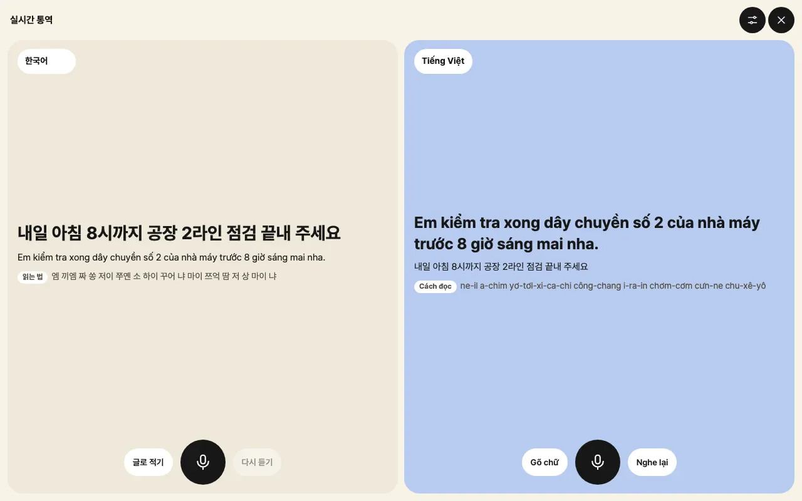
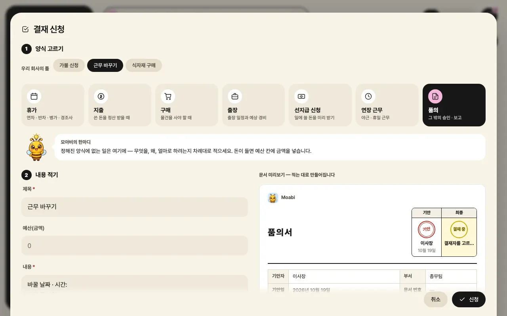
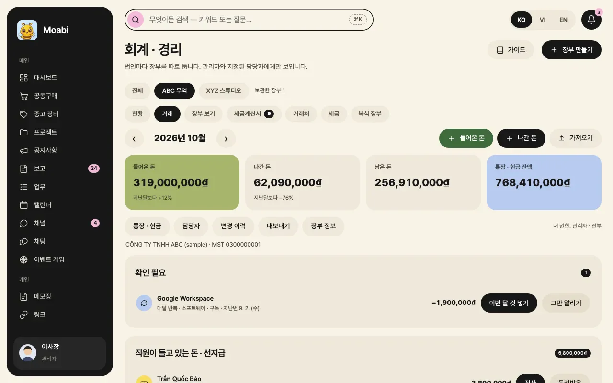

어떻게 만들었나
01
각자 자기 언어로 일합니다
한국인 관리자는 한국어로, 베트남 직원은 베트남어로 지시와 보고, 피드백을 씁니다. 읽는 사람에게는 그 사람의 언어로 자연스럽게 옮겨져 보이고, 원문도 함께 표시되어 오해가 생기면 바로 확인할 수 있습니다.
뜻이 둘로 읽히는 말에는 표시가 붙고, 이상한 번역은 직접 고칠 수 있으며, 지시와 결재는 보내기 전에 상대 언어로 어떻게 가는지 미리 봅니다. 마주 앉아 대화할 때는 실시간 통역 화면을 씁니다.

02
아침마다 할 일이 먼저 보입니다
대시보드 맨 위의 카드들이 업무와 완료 추이, 프로젝트, 지시의 지금 상황을 요약합니다. 그 아래에는 오늘 먼저 할 일과 놓치고 있는 일, 오늘과 이번 주 일정이 이어집니다.
업무는 마감순과 칸반으로, 프로젝트와 캘린더는 부서 색으로 나뉘어 회사 전체의 흐름이 한 화면에 들어옵니다.
03
결재와 근태, 근무표까지 앱 안에서
휴가와 지출, 구매, 출장, 선지급, 연장 근무, 품의를 앱에서 신청하면 양식에 맞춘 결재 문서가 바로 만들어지고 결재선대로 승인됩니다.
출퇴근 기록과 남은 연차는 근태 화면에서, 교대 근무는 주간 근무표에서 관리합니다. 종이와 메신저로 오가던 승인이 기록으로 남습니다.

04
급여와 장부는 법인별로, 볼 사람만
회계·경리 화면은 법인마다 장부를 따로 두고 들어온 돈과 나간 돈, 세금계산서와 통장 거래를 정리합니다. 급여 화면은 급여 조건을 넣으면 실수령액과 회사가 쓰는 돈을 계산합니다.
두 화면 모두 관리자와 지정된 담당자에게만 보여, 민감한 숫자가 필요한 사람에게만 열립니다.
